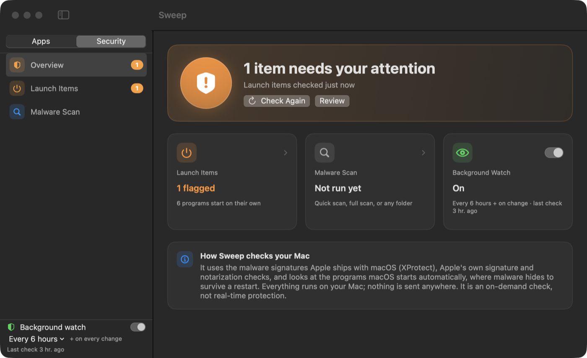
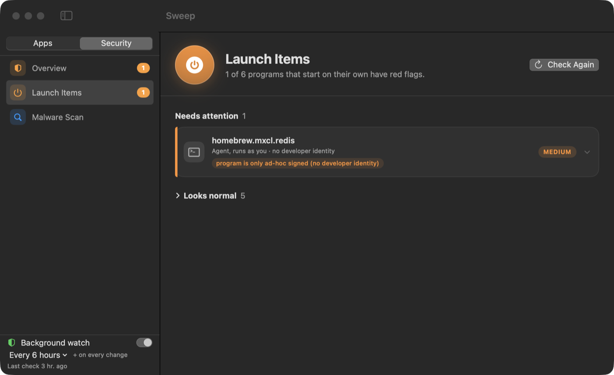
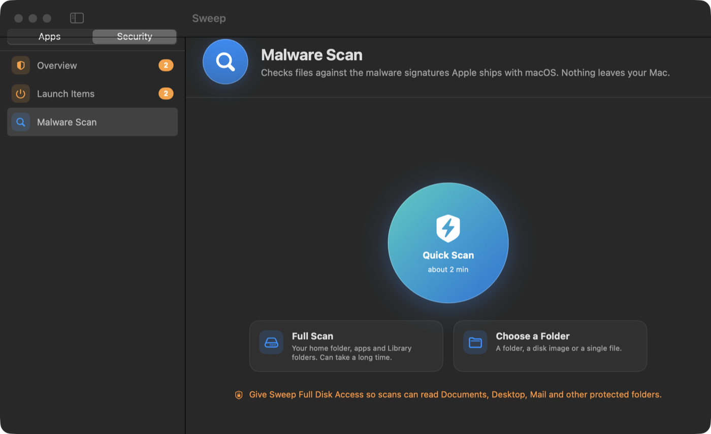

Sweep removes a Mac app and everything it leaves behind, and checks your Mac where malware actually hides. Free, open source, and nothing ever leaves your Mac.
macOS 14 or later · Free · MIT license

Drag an app in, see every file it left with the reason it matched, and remove it all. Always to the Trash, with Undo.
Preferences, caches, containers, saved state, launch agents, logs and crash reports, found by bundle id and app name.
Nothing is deleted permanently. Everything goes to the Trash and comes back with ⌘Z, even system files.
Anything that might belong to something else, like a shared folder, is suggested but never ticked for you.
Items owned by macOS ask for your password, and Sweep checks each one again before moving it.
Mac info-stealers typically hide as launch agents or daemons and keep scripts in hidden files. Sweep looks exactly there.
Programs macOS starts on its own, with red flags: hidden scripts, interpreters, unsigned code, world-writable paths.
Quick Scan of the usual hiding places in a couple of minutes, Full Scan, or any folder, using Apple's XProtect signatures.
Re-checks launch items whenever one is added or changed, and notifies you when a suspicious one appears.
For every app: notarized or not, who signed it, whether it was downloaded, and whether it matches known malware.


An on-demand checker, not real-time antivirus protection.
Download the disk image, open it, and drag Sweep to Applications.
Get the latest Sweep-x.y.z.dmg from the
Releases page, open it and drag Sweep to Applications.
macOS shows a warning because Sweep is not notarized yet. Click Done.
Open System Settings → Privacy & Security, scroll to the message about Sweep, click Open Anyway and confirm with your password. You only do this once.
To scan protected folders (Documents, Desktop, Mail…): System Settings → Privacy & Security → Full Disk Access → +, then choose Sweep.
No account, no telemetry, no cloud. Scans use the signatures Apple already ships with macOS, read on your Mac. There is also a command-line tool for scripts:
sweep remove /Applications/Foo.app # to the Trash, asks first
sweep undo # put it back
sweep malware --quick # quick malware scan
sweep persistence # launch items with red flagsSweep is free. A donation helps pay for an Apple Developer account, so Sweep can be notarized and open without any warning.